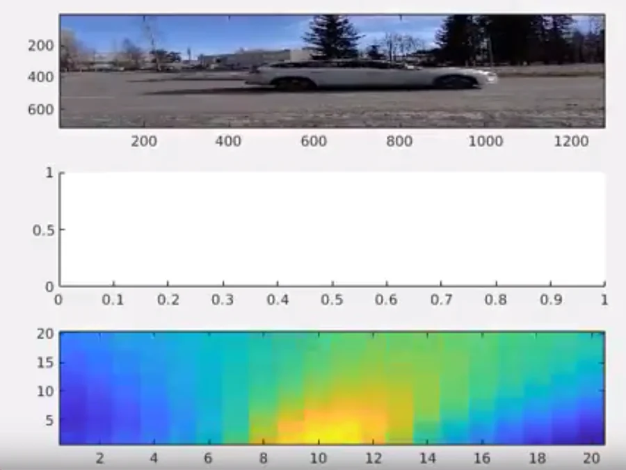

Go back to .. Jose Maria Perez-Macias

An educational project examining how multi-microphone arrays "see" sound in 3D space. Developed as part of the Advanced Audio Processing course at Tampere University, this project implements 8-channel circular microphone array (miniDSP UMA-8) beamforming and Steered Response Power with Phase Transform (SRP-PHAT) algorithms to track moving vehicles in road traffic.
This is a sound synthesis and spatial acoustics project done in Csound from the "Sound and Wave Engineering" course back in 2003/2004 at the University of Valladolid (inspired by Richard Boulanger's Csound book).
The project explores instrument design, spatial audio trajectories, and acoustic sound models. The modernized web version is available here in English and here in Spanish (archived original page from the Image Processing Laboratory LPI-UVa here).